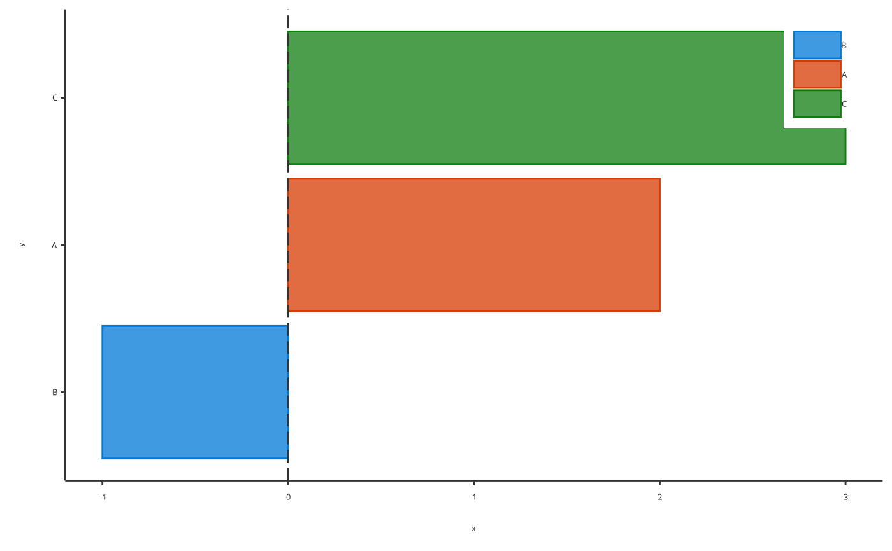
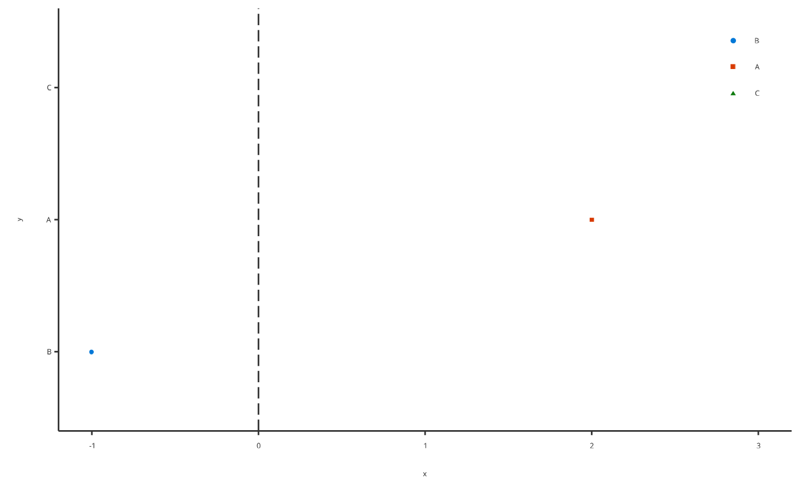
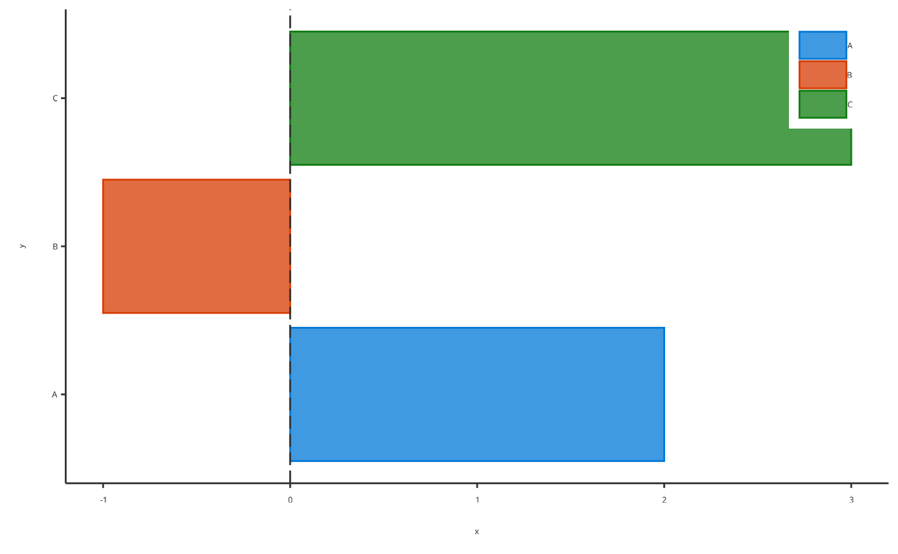

Producing tornado plots
Usage
plotTornado(
data = NULL,
metaData = NULL,
x = NULL,
y = NULL,
sorted = NULL,
colorPalette = NULL,
bar = TRUE,
dataMapping = NULL,
plotConfiguration = NULL,
plotObject = NULL
)Arguments
- data
A data.frame to use for plot.
- metaData
A named list of information about
datasuch as thedimensionandunitof its variables.- x
Numeric values to plot along the
xaxis. Only used instead ofdataifdataisNULL.- y
Character values to plot along the
yaxis. Only used instead ofdataifdataisNULL.- sorted
Optional logical value defining if
yvalues are sorted by absolute values ofx.- colorPalette
Optional character values defining a
ggplot2colorPalette (e.g."Spectral")- bar
Optional logical value setting tornado plot as bar plot instead of scatter plot.
- dataMapping
A
TornadoDataMappingobject mappingx,yand aesthetic groups to their variable names ofdata.- plotConfiguration
An optional
TornadoPlotConfigurationobject defining labels, grid, background and watermark.- plotObject
An optional
ggplotobject on which to add the plot layer
Examples
# Produce a tornado plot
plotTornado(x = c(2, -1, 3), y = c("A", "B", "C"))

# Produce a tornado plot as scatter plot
plotTornado(x = c(2, -1, 3), y = c("A", "B", "C"), bar = FALSE)

# Produce a tornado plot as is (no sorting)
plotTornado(x = c(2, -1, 3), y = c("A", "B", "C"), sorted = FALSE)
